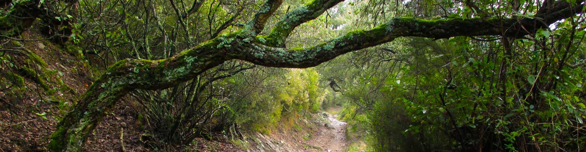

Ruta · Girona
La Pujada als Àngels és una excursió clàssica que moltes generacions de gironins en un moment o altre -amb l’escola, amb amics, amb la família- han fet . Arribarem al Santuari de la Mare de Déu…